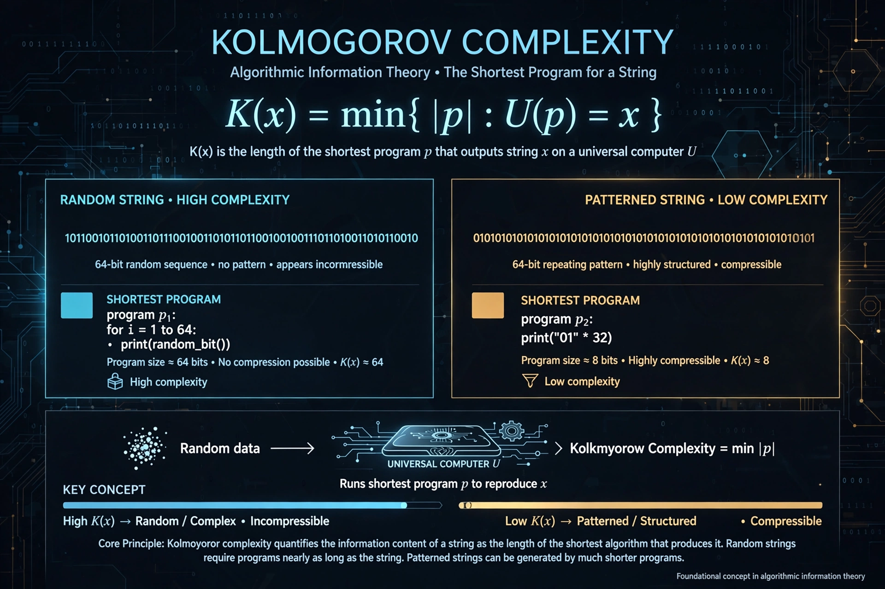

| Kolmogorov complexity | |
|---|---|
 | |
| Field | Information theory, computability |
| Introduced by | Andrey Kolmogorov, Ray Solomonoff, Gregory Chaitin (1960s) |
In algorithmic information theory, the Kolmogorov complexity of an object, such as a string, is the length of the shortest computer program that produces that object as output. It is named after Andrey Kolmogorov, who developed it independently alongside Ray Solomonoff and Gregory Chaitin in the 1960s.
Formally, relative to a universal Turing machine U, K(x) = min{|p| : U(p) = x}. The invariance theorem shows the choice of universal machine changes K only by an additive constant. A string is (algorithmically) random if it is incompressible — its shortest description is about as long as itself.
Kolmogorov complexity is not a computable function: a proof related to the Berry paradox and the halting problem shows no program can output K(x) for all x. Nevertheless approximations via real-world compression are widely used in data analysis, machine learning (minimum description length), and tests of randomness.